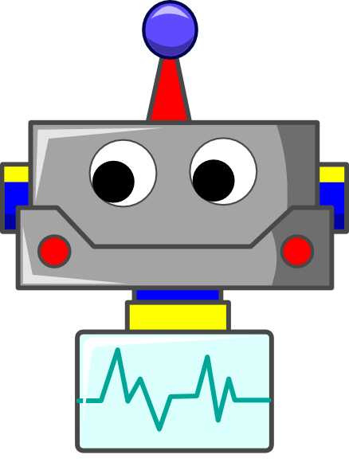

<div class="container">
  <div class="row align-items-center">
    <div class="mx-auto">
      <h3><i class="fas fa-robot"></i> ChatBot</h3>
    </div>
  </div>

  <div class="row align-items-center justify-content-center">
    <div class="col-lg-8">
      <ul #scrollMe class="messages">
        <div *ngFor="let msg of messageList; let idx = index">
          <li class="message appeared" [ngClass]="{'left':msg.sender === 'boot', 'right':msg.sender === defaultSender}">
            <div class="avatar">
              
              
            </div>
            <div class="text_wrapper">
              <div class="text">
                <p class="time"> ({{msg.date | date:'HH:mm:ss'}})</p>
                <div id="msg{{idx}}" [ngStyle]="{'color': msg.color != '' ? msg.color : '' }" [innerHTML]="msg.message"></div>
              </div>
            </div>
          </li>
        </div>
      </ul>
    </div>
  </div>

  <div class="row align-items-center justify-content-center">
    <div class="col-sm-6">
      <input type="text" class="form-control" (keyup.arrowup)="getLastMessage()" (keyup.enter)="sendMessage()" [(ngModel)]="userMessage" autofocus="true" />
    </div>
    <div class="col-sm-2">
      <button class="btn btn-success sendbtn" (click)="sendMessage()"><i class="far fa-share-square"></i>
        Send</button>
    </div>
  </div>

  <div class="row align-items-center justify-content-center">
    <span class="tip">Use the up arrow to retrieve the last message</span>
  </div>
</div>